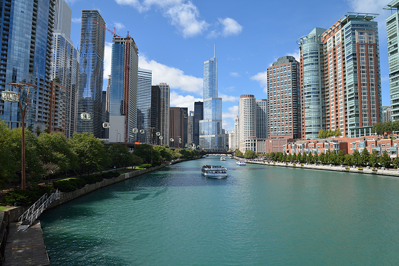

Traveling Around The World
ŚWIAT
Usa
Państwo federacyjne w Ameryce Północnej składające się z 50 stanów, graniczące z Kanadą od północy, Meksykiem od południa, Oceanem Spokojnym od zachodu, Oceanem Arktycznym od północnego zachodu i Oceanem Atlantyckim od wschodu.
Trzecie pod względem liczby ludności państwo (po Chinach i Indiach), a czwarte pod względem powierzchni (po Rosji, Kanadzie i Chinach). W jego skład wchodzą także pozastanowe wyspy na Pacyfiku.
ZOBACZ

Zjednoczone Emiraty Arabskie
Państwo arabskie na Bliskim Wschodzie, położone nad Zatoką Perską i Omańską, składające się z siedmiu emiratów: Abu Zabi, Dubaj, Szardża, Adżman, Umm al-Kajwajn, Ras al-Chajma i Fudżajra. Graniczy z Arabią Saudyjską i Omanem. Zjednoczone Emiraty Arabskie położone są w strefie klimatu zwrotnikowego kontynentalnego suchego, który w głębi kraju staje się skrajnie suchy. Powierzchnia kraju jest w większości nizinna (100-150 metrów) i pustynna (około 97% powierzchni państwa zajmuje pustynia Ar-Rub al-Chali). Na wschodzie kraju wznoszą się niewielkie góry Al-Hadżar al-Gharbi[6]. Najwyższym szczytem państwa jest góra Dżabal Jibir (1517 m n.p.m.), jednakże nie jest to najwyższy punkt kraju, ten bowiem leży na zboczu góry Dżabal al-Dżajs (1910 m n.p.m.), której szczyt wznosi się już na terytorium Omanu[7].
ZOBACZ
Malediwy
Malediwy to kraj, w którym można spędzić tylko jeden rodzaj urlopu – bajeczny i daleki od codzienności. Ten niezwykły archipelag tworzy około 1200 wysp i wysepek. Malediwy słyną ze wspaniałych plaż z białym piaskiem, lazurowego oceanu, pachnących krzewów oraz porastających wszystkie wyspy palm kokosowych. Ponadto to idealne miejsce do całorocznego nurkowania, podwodny świat Oceanu Indyjskiego nie ma sobie równych. Malediwy to synonim rajskich wakacji, marzenie wielu podróżników.
ZOBACZ